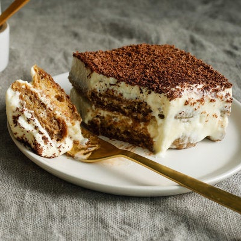

Tiramisu

Done correctly, a classic tiramisù can be transcendent. A creamy dessert of espresso-soaked ladyfingers surrounded by lightly sweetened whipped cream and a rich mascarpone, tiramisù relies heavily on the quality of its ingredients. If you don’t have a barista setup at home, pick up the espresso at a local coffee shop, or use strongly brewed coffee. As for the ladyfingers, make your own or buy them, but keep in mind that store-bought varieties can range from soft and spongy (like angel food cake) to hard and crunchy (like biscotti). Both kinds will work here, but if you're using the softer variety, stick to a light brushing of espresso, instead of a deep dip.
Yield: 6 to 8 Servings
INGREDIENTS
FOR THE CREAM
- 4 large egg yolks
- ½ cup (100 grams) granulated sugar, divided
- ¾ cup heavy cream
- 1 cup (227 grams [8 ounces] ) mascarpone
FOR THE ASSEMBLY
- 1¾ cups good espresso or very strong coffee
- 2 tablespoons rum or cognac
- 2 tablespoons unsweetened cocoa powder
- About 24 ladyfingers (from one 200 gram [7 ounce] package)
- 1 to 2 ounces bittersweet chocolate, for shaving (optional)
PREPARATION
- Using an electric mixer in a medium bowl, whip together egg yolks and ¼ cup (50 grams) sugar until very pale yellow and about tripled in volume. A slight ribbon should fall from the beaters (or whisk attachment) when lifted from the bowl. Transfer mixture to a large bowl, wiping out the medium bowl used to whip the yolks and set aside.
- In the medium bowl, whip cream and remaining ¼ cup (50 grams) sugar until it creates soft-medium peaks. Add mascarpone and continue to whip until it creates a soft, spreadable mixture with medium peaks. Gently fold the mascarpone mixture into the sweetened egg yolks until combined.
- Combine espresso and rum in a shallow bowl and set aside.
- Using a sifter, dust the bottom of a 2-quart baking dish (an 8x8-inch dish, or a 9-inch round cake pan would also work here) with 1 tablespoon cocoa powder.
- Working one at a time, quickly dip each ladyfinger into the espresso mixture -- they are quite porous and will fall apart if left in the liquid too long -- and place them rounded side up at the bottom of the baking dish. Repeat, using half the ladyfingers, until you’ve got an even layer, breaking the ladyfingers in half as needed to fill in any obvious gaps (a little space in between is O.K.). Spread half the mascarpone mixture onto the ladyfingers in one even layer. Repeat with remaining espresso-dipped ladyfingers and mascarpone mixture.
- Dust top layer with remaining tablespoon of cocoa powder. Top with shaved or finely grated chocolate, if desired.
- Cover with plastic wrap and let chill in the refrigerator for at least 4 hours (if you can wait 24 hours, all the better) before slicing or scooping to serve.